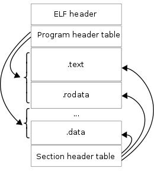

调试命令：disass 反汇编
6.1~6.4 节讲的是怎么把调试器"架起来"：启动、attach、编译并调试目标，以及进入调试会话。截至 6.4 节，会话里还没有一条真正去看目标程序的命令。从本节开始，我们逐个实现调试会话内的调试命令，第一个是反汇编 disass。
反汇编是指令级调试的基础：指令级调试不看源码，看的就是一条条机器指令以及它们在内存里的地址。另外，只有先能看到指令及其地址，后面才能在指定地址处添加断点，所以我们先介绍反汇编。
本节配套代码在 hitzhangjie/godbgv2 的 tag ch6.5，git diff ch6.4 ch6.5 可以看到这一节改了什么。
实现目标：godbg> disass [address] 反汇编机器指令
本节实现 disass [address]，address 是可选参数：
- 不带 address：从当前停止位置（PC）开始反汇编；
- 带上 address：从指定地址开始反汇编，地址支持十六进制写法（如
0x478120），也支持十进制和0开头的八进制（后面parseAddress会介绍）； - 两种用法都是先解析出一个起始地址，再走同一套反汇编处理逻辑，不存在两条分叉的实现路径。
用法如下：
godbg> disass # 从当前停止位置开始，默认 10 条
godbg> disass 0x478120 # 从 0x478120 开始，默认 10 条
godbg> disass -n 5 # 只反汇编 5 条
godbg> disass 0x478120 -n 3 -s intel # 从指定地址开始、3 条、intel 语法
反汇编条数由 -n/--max 控制，默认 10；汇编语法由 -s/--syntax 控制，支持 go、gnu、intel 三种，默认 gnu。每条指令输出为三列：
0x478120: e9 bb c8 ff ff jmpq 0xffffffffffffc8c4
第一列是指令地址，第二列是这条指令的机器码，第三列是反汇编得到的汇编文本。
为了让"不带 address"这种用法成立，本节还要前移一个最小的基础能力：读取被调试进程当前的 PC。命令层得先知道"当前停在哪儿"，才能把它当作反汇编起点。按前面的分层，这个能力要一路补到 api.Client、debugger 门面和 pkg/target。完整的寄存器读取命令（pregs）到 6.14 节才实现，这里只补一个 CurrentPC()，够本节使用即可。
还要提前说明一点：本节只做反汇编，不涉及断点。断点命令在 6.6 节才实现，所以本节的代码里没有"断点落在反汇编起点上，需要回退 PC 或还原 0xCC"这类处理。断点位置反汇编的原理我们照常讲清楚，但会把"本节代码没有做"的地方标出来。
基础知识
反汇编：变长指令的逐条解码
汇编指令和硬件强相关，本质上是一组助记符和操作数，一条汇编指令的操作码、操作数按指令集规定的编码方式编码后，就得到了机器指令。不同指令的操作码、操作数占用字节数可能相同也可能不同，x86 就是典型的变长编码。
变长编码意味着反汇编不能按固定步长往后数，必须一条一条解码：先解出当前这条指令，拿到它占用的字节数，再移动到下一条指令的位置继续解。x86asm 的 Decode 返回的 Inst.Len 就是当前指令的长度，这是 decode 循环里推进偏移量的依据；一旦遇到解不出来的字节，还要决定是跳过继续还是直接报错。
自己从头实现一套 x86 解码器显然不现实。现成的反汇编方案主要有：
- Capstone：支持多平台、多指令集的反汇编框架，C 实现；Go 里可以通过 Gapstone 绑定调用；
- Go 官方提供的 golang.org/x/arch/x86/x86asm：纯 Go 的 x86/x86-64 解码器。流行的 Go 调试器 dlv 也是用它做反汇编的。
godbgv2 选择 x86asm：纯 Go 实现，不用引入 CGO 和额外的动态库，调试器本身的构建和分发都简单；我们只需要解码和格式化，x86asm 的 Decode、GNUSyntax、GoSyntax、IntelSyntax 就够用了。
指令数据从哪里来
反汇编的对象是机器指令，指令数据可以从两个地方来：可执行文件，或者目标进程的内存。
做法一：从可执行文件里读。 先根据 pid 找到可执行程序。Linux 下虚拟文件系统路径 /proc/<pid>/exe 是一个符号链接，指向进程 <pid> 对应的可执行程序的绝对路径，Go 程序读取该链接就能拿到路径。Linux 下的可执行文件是 ELF（Executable and Linkable Format）格式，接下来要按 ELF 格式解析这个文件，从 .text 里读出机器指令，再逐条 decode。
ELF 文件的大致结构如下所示。要读取、解析 ELF 文件数据，可以借助标准库 debug/elf。

一个 ELF 文件由 ELF Header、段头表（Program Header Table）、节头表（Section Header Table）以及一系列的 Section 组成。段头表描述的是加载器眼中的"执行时视图"，节头表描述的是链接器眼中的"链接时视图"，这两种视图的设计细节在 7.2 节《理解ELF文件》中有专门介绍，这里不展开。对反汇编来说，只需要关心一件事：机器指令集中在 .text section 里，按 ELF 格式找到它、把数据读出来即可。
这种做法适合离线全量分析，objdump -d 这类工具走的就是这条路径；本节要实现的调试器则采用下面的做法二。
做法二：用 ptrace 直接读目标进程内存。 这是 godbgv2 采用的做法。tracee 处于停止状态时，调试器可以通过 ptrace(PTRACE_PEEKTEXT, pid, addr, ...) 读取目标地址处的数据。Linux 不区分 text 和 data 地址空间，PEEKTEXT 和 PEEKDATA 效果相同，都是读 tracee 的内存。
这个做法简单直接，读到的是进程运行时真实的指令数据，不需要做"文件偏移 → 进程地址"的换算，也不用管 PIE 程序每次运行加载地址不同的问题。它的限制是只能读已经映射的页：调试器平时只关心当前停止位置附近的一小段指令，这段内存一定在（CPU 正停在这里），所以完全够用；如果要全量反汇编整个程序，才需要回到做法一。
ps：这里说的"PIE 程序每次运行加载地址不同"，背后就是 ASLR（地址空间布局随机化）。对非 PIE 构建的 Go 程序，代码段地址是固定的（本书示例里的
0x478120每次运行都一样），但栈、堆、共享库的地址每次启动都会变化；调试脚本里如果写死了栈变量这类地址，重启后就会失效。ASLR 的原理及其对调试的完整影响，见 12.8 认识ASLR。
本节的目标层从起始地址读 1024 字节的窗口，再在这个窗口上逐条解码。为什么是 1024？x86 单条指令最长 15 字节，默认反汇编 10 条指令最多也就 150 字节，1024 字节的窗口绰绰有余；-n 数值再大，也只是在这个窗口里多解几条，不会为了反汇编去读更大范围的内存。
断点位置的反汇编（原理，本节尚未实现）
这一小节讲的是断点存在时反汇编要额外处理什么。本节代码还没有断点（6.6 节实现），所以这些处理目前都没有做，这里先把原理和后面的实现计划讲清楚。
动态断点往往是通过指令 patch 来实现的，即将任意完整机器指令的第一字节数据保存，然后将其替换成 0xCC (int 3) 指令，处理器执行完 0xCC 之后自身就会停下来，这就是断点的效果。
断点通过指令 patch 来实现必须覆盖指令的第一字节，不能覆盖其他字节，原因很简单：指令为了提高解码效率、支持更多操作类型，往往都是采用的变长编码。如果写的不是第一字节，那么处理器执行时可能会产生错误。比如一条指令操作码有多个字节，结果因为覆盖的原因导致变成了一个错误的操作码，执行时就会有异常。再比如一条指令只有一个字节，我们非要写到第二个字节存起来，那就起不到断点的作用，因为执行到这个断点时，前面本不应该执行的一字节指令却执行了。
对于断点指令，我们在《4.2.3 断点与执行控制》进行过介绍；对于指令 patch，不光是调试器中会用到，对于 gomonkey mock 测试框架、软件逆向及破解领域，也是会使用的。
回到反汇编。假定反汇编的起始地址是 addr，我们首先需要关注的是 addr 处是不是一个指令断点，这决定了接下来两种不同的处理方式：
addr处不是断点：可以直接从addr开始读取指令数据、逐条 decode；addr处是断点：addr开始的那条完整指令已经被 patch 过了，从addr开始反汇编，必须先恢复为原来的指令数据，再做 decode。
断点添加之前：
addr: 0x?? 0x1 0x2 0x3 0x4
断点添加之后：
addr: 0xcc 0x1 0x2 0x3 0x4 | orig: <addr, 0x??>
这里要特别注意，反汇编操作并不是控制程序执行，它只需要把读出来的指令数据缓冲区中的 0xCC 恢复成原来的指令字节即可，不需要通过指令 patch 把 0xCC 写回原数据。等后续 next、continue、step 这些真正影响执行的操作，才需要把内存里的 0xCC 替换回原指令。
那么"当前停止位置"和断点地址又是什么关系？软件断点命中时，CPU 执行的是 0xCC，这是一条完整的一字节指令，执行完之后 PC 指向下一条指令，也就是：
当前停止在断点处：
addr: 0xcc 0x1 0x2 0x3 0x4 | orig: <addr, 0x??>
PC = addr + 1
所以对无参的 disass 来说，真正要反汇编的起点往往不是 PC，而是 PC-1：
PC-1处是我们下的断点：从PC-1开始反汇编，并把该处读到的 0xCC 恢复成原始字节；PC-1处不是断点：那 PC 本身就是下一条待执行指令的地址，直接从 PC 开始反汇编即可。exec 启动后停在入口、attach 后停在目标线程这些情况，都属于这一类。
这套处理在 godbgv2 里要等 6.6 节实现断点之后才补齐。godbg 的完整实现里，disass 提供了 --clearall 选项，配合目标层的 DisassembleWithBreakpointCleared 扫描反汇编窗口内的所有断点、把缓冲区里的 0xCC 还原成原始字节再反汇编；godbgv2 目前还没有这部分，本节的目标层 disassembleData 拿到什么字节就解什么字节。等断点实现之后，我们再回来把 disass 的断点处理补上，这与"本节只做反汇编"的范围划分是一致的。
在 godbgv2 中实现
前面几节搭好的分层这次不用动：命令层新增 disass 子命令，api.Client 补两个方法（CurrentPC、Disassemble），debugger 门面转发，pkg/target 真正去读寄存器和读内存。相对 ch6.4，这一节的调用链是：
godbg> disass [address]
cmd/debug/disass.go RunE：校验 0 或 1 个参数；disassStartAddress 得到起始地址；
调 Client.Disassemble，按三列格式打印结果
pkg/service/api Client 接口：新增 CurrentPC；Disassemble 返回 []AsmInstruction
pkg/service/debugger 门面，把请求转给目标层
pkg/target pc.go：PTRACE_GETREGS 读 RIP
disassemble.go：PTRACE_PEEKTEXT 读内存 + x86asm.Decode
命令层后面仍然是 Client，main 里把它装配成 debugger.New()，这个约定没有变。下面按命令层、服务层、目标层分别看。
命令层
cmd/debug/disass.go 的完整代码如下：
package debug
import (
"errors"
"fmt"
"github.com/hitzhangjie/godbgv2/pkg/service/api"
"github.com/spf13/cobra"
)
var disassCmd = &cobra.Command{
Use: "disass [address]",
Short: "反汇编机器指令（缺省从当前停止位置开始）",
Aliases: []string{"dis", "disassemble"},
Annotations: map[string]string{
cmdGroupAnnotation: cmdGroupSource,
},
RunE: func(cmd *cobra.Command, args []string) error {
if len(args) > 1 {
return errors.New("usage: disass [address]")
}
// 未指定地址时从当前停止位置开始反汇编，指定地址时从该地址开始；
// 两种情况都是先解析出起始地址，再走同一套反汇编处理逻辑。
addr, err := disassStartAddress(args)
if err != nil {
return err
}
max, _ := cmd.Flags().GetUint64("max")
syntax, _ := cmd.Flags().GetString("syntax")
var insts []api.AsmInstruction
insts, err = Client.Disassemble(addr, max, syntax)
if err != nil {
return err
}
for _, inst := range insts {
fmt.Printf("%#x:\t% x\t%s\n", inst.Addr, inst.Bytes, inst.Text)
}
return nil
},
}
// disassStartAddress 解析反汇编起始地址：未指定地址时取当前停止位置（PC），
// 指定地址时按参数解析。两种情况得到相同的起始地址语义。
func disassStartAddress(args []string) (uint64, error) {
if len(args) == 0 {
pc, err := Client.CurrentPC()
if err != nil {
return 0, fmt.Errorf("read current pc err: %v", err)
}
return pc, nil
}
addr, err := parseAddress(args[0])
if err != nil {
return 0, fmt.Errorf("parse address err: %v", err)
}
return addr, nil
}
func init() {
debugRootCmd.AddCommand(disassCmd)
disassCmd.Flags().Uint64P("max", "n", 10, "反汇编指令数量")
disassCmd.Flags().StringP("syntax", "s", "gnu", "反汇编指令语法，支持：go, gnu, intel")
}
几个要点：
Use是disass [address]，方括号表示 address 可选；len(args) > 1时返回 usage 错误，也就是只接受 0 个或 1 个参数；- 起始地址的解析集中在
disassStartAddress：没有参数时调Client.CurrentPC()取当前停止位置，有参数时交给parseAddress。两种来源最终都变成一个uint64起始地址，后面就只剩一条路径——Client.Disassemble(addr, max, syntax)。这正是"无参=当前停止位置、有参=指定地址，两者同一套处理逻辑"在代码上的落点； -n/--max、-s/--syntax在init里注册，RunE只负责读取；默认值 10 和 gnu 就是help disass里显示的值；- 反汇编本身不在命令层做：命令层拿到的是
[]api.AsmInstruction快照，只负责把每条指令按0xADDR:\tBYTES\tTEXT三列打印出来。后端不打印、前端只展示，这是贯穿本书的约定； - 命令还注册了
dis、disassemble两个别名，就是Use下面的Aliases，敲短一点也一样能用。
地址字符串的解析放在 cmd/debug/address.go：
package debug
import (
"fmt"
"strconv"
)
// parseAddress 将字符串解析为地址值。
//
// 支持 0x 前缀的十六进制（如 0x478120）与十进制（如 4686112），
// 以及 0 前缀的八进制（Go 的 strconv.ParseUint base=0 约定）。
func parseAddress(locStr string) (uint64, error) {
v, err := strconv.ParseUint(locStr, 0, 64)
if err != nil {
return 0, fmt.Errorf("invalid address: %v", err)
}
return v, nil
}
strconv.ParseUint(locStr, 0, 64) 的 base 传 0，表示按字符串前缀推断进制：0x 开头按十六进制，0 开头按八进制，其余按十进制。所以 disass 0x478120、disass 4686112 都是合法的；解析失败会返回 invalid address 错误。
服务层
api.Client 新增了两个方法：CurrentPC 给无参 disass 取起点，Disassemble 做反汇编并返回指令快照（这里省略了接口文件头部的注释和 Kind、State 的定义）：
type Client interface {
// Launch 启动并跟踪一个进程，返回被调试进程 pid
Launch(kind Kind, cmd string, args ...string) (int, error)
// State 返回当前调试会话状态
State() (*State, error)
// CurrentPC 返回被调试进程当前停止位置的 PC（指令指针）。
//
// tracee 处于停止状态时，它就是"当前停下位置"：无参 disass 等
// 以当前位置为起点的命令据此确定起点。
CurrentPC() (uint64, error)
// Kill 终止被调试进程
Kill() error
// Attach 跟踪一个正在运行的进程
Attach(pid int) error
// Detach 结束调试，分离被调试进程
Detach() error
// Disassemble 反汇编地址 addr 处的指令，返回 max 条
Disassemble(addr, max uint64, syntax string) ([]AsmInstruction, error)
}
CurrentPC 插在 State 之后，注释里写明了它的定位：tracee 处于停止状态时，它返回的就是"当前停下位置"。完整的寄存器读取能力要到 6.14 节 pregs 才实现，这里只把"读 PC"这一项最小能力前移，因为无参 disass 现在就需要它。
反汇编结果用 api.AsmInstruction 表示，定义在 pkg/service/api/types.go：
// AsmInstruction 一条反汇编指令
type AsmInstruction struct {
Addr uint64 // 指令地址
Bytes []byte // 指令机器码
Text string // 指令汇编文本
}
这里体现了服务层的两条约定：接口只传值、只返回快照（[]api.AsmInstruction 一次性返回，不做流式或回调）；后端不打印任何内容，输出格式由命令层决定。
pkg/service/debugger 门面只做转发和空指针检查（同一个文件里还有 Launch、Attach、Detach 等方法，本节不涉及，这里省略）：
// CurrentPC 返回被调试进程当前停止位置的 PC（指令指针）
func (d *Debugger) CurrentPC() (uint64, error) {
if d.dbp == nil {
return 0, fmt.Errorf("no debugged process")
}
return d.dbp.CurrentPC()
}
// Disassemble 反汇编地址 addr 处的指令，返回 max 条
func (d *Debugger) Disassemble(addr, max uint64, syntax string) ([]api.AsmInstruction, error) {
if d.dbp == nil {
return nil, fmt.Errorf("no debugged process")
}
return d.dbp.Disassemble(addr, max, syntax)
}
装配没有变化，main 里仍然是 cmd.Client = debugger.New()；命令层不需要知道后端换了谁，第 9 章切到 headless RPC 时这一层同样不用改。
目标层：读取当前 PC
pkg/target/pc.go 是本节新增的文件，逻辑很短：
package target
import "syscall"
// CurrentPC 返回被调试进程当前停止位置的 PC（指令指针）。
//
// 调试器只会在 tracee 处于停止状态时执行调试命令，此时直接通过
// PTRACE_GETREGS 读取 RIP 即可；ptrace 请求统一经 ExecPtrace 串行执行。
func (p *DebuggedProcess) CurrentPC() (uint64, error) {
var regs syscall.PtraceRegs
err := p.ExecPtrace(func() error {
return syscall.PtraceGetRegs(p.Process.Pid, ®s)
})
if err != nil {
return 0, err
}
return regs.PC(), nil
}
- 调试器只会在 tracee 处于停止状态时执行调试命令，所以直接
PTRACE_GETREGS读寄存器，拿到的 RIP 就是"当前停止位置"； - ptrace 请求没有直接裸调
syscall.PtraceGetRegs，而是包在ExecPtrace里。6.1 节讲过 ptrace limit：跟踪关系建立后，所有 ptrace 请求必须来自同一个 tracer 线程，ExecPtrace就是用来保证这一点的；CurrentPC和后面的peekMemory都走这条路，串行执行，不会互相插队； - 这里读的是主线程（
p.Process.Pid）的 RIP。本节示例loop停在入口时还是单线程，所以够用；多线程程序里"当前停止位置"还要考虑选哪个线程，那是 6.17 节"调试多线程程序"的内容。
目标层：读取指令并反汇编
pkg/target/disassemble.go 负责真正干活，核心代码如下（省略了文件头部的 import 和前面的 DisassembleSingleInstruction，见下面 ps）：
// Disassemble 反汇编地址addr处的指令，返回max条
func (p *DebuggedProcess) Disassemble(addr, max uint64, syntax string) ([]api.AsmInstruction, error) {
// 指令数据
dat := make([]byte, 1024)
n, err := p.peekMemory(uintptr(addr), dat)
if err != nil || n == 0 {
return nil, fmt.Errorf("peek text error: %v, bytes: %d", err, n)
}
return p.disassembleData(addr, dat[:n], max, syntax)
}
// disassembleData 在给定的数据上进行反汇编
func (p *DebuggedProcess) disassembleData(addr uint64, data []byte, max uint64, syntax string) ([]api.AsmInstruction, error) {
insts := []api.AsmInstruction{}
// 反汇编这里的指令数据
offset := uint64(0)
count := uint64(0)
for count < max && int(offset) < len(data) {
inst, err := x86asm.Decode(data[offset:], 64)
if err != nil {
if err == x86asm.ErrUnrecognized {
offset++
continue
}
return nil, fmt.Errorf("x86asm decode error: %v", err)
}
asm, err := instSyntax(inst, syntax)
if err != nil {
return nil, fmt.Errorf("x86asm syntax error: %v", err)
}
end := offset + uint64(inst.Len)
insts = append(insts, api.AsmInstruction{
Addr: addr + offset,
Bytes: data[offset:end],
Text: asm,
})
offset = end
count++
}
return insts, nil
}
// instSyntax 按指定语法风格格式化一条指令
func instSyntax(inst x86asm.Inst, syntax string) (string, error) {
asm := ""
switch syntax {
case "go":
asm = x86asm.GoSyntax(inst, uint64(inst.PCRel), nil)
case "gnu":
asm = x86asm.GNUSyntax(inst, uint64(inst.PCRel), nil)
case "intel":
asm = x86asm.IntelSyntax(inst, uint64(inst.PCRel), nil)
default:
return "", fmt.Errorf("invalid asm syntax error")
}
return asm, nil
}
// peekMemory 读取内存地址addr处的数据到buf中，返回实际读取的字节数。
// TODO(ch6.13): 将 peekMemory 抽出为 DebuggedProcess.ReadMemory 方法
func (p *DebuggedProcess) peekMemory(addr uintptr, buf []byte) (int, error) {
var (
dat int
err error
)
err = p.ExecPtrace(func() error {
// PtracePeekText 与 PtracePeekData 效果相同
n, err := syscall.PtracePeekText(p.Process.Pid, addr, buf)
if err != nil {
return err
}
dat = n
return nil
})
return dat, err
}
逐段说明：
Disassemble只做两件事：从addr读一段固定 1024 字节的窗口，然后把窗口交给disassembleData。窗口读取失败或一个字节都读不到时，返回peek text error；disassembleData是 decode 循环：count < max && offset < len(data)两个条件同时满足才继续；每次x86asm.Decode(data[offset:], 64)按 64 位模式解码，成功后用instSyntax转成指定语法，Bytes取data[offset:offset+inst.Len]，Addr是addr+offset，然后offset += inst.Len、count++；- 解码失败分两种：
x86asm.ErrUnrecognized表示这段字节不是可识别的指令，跳过一个字节继续（相当于重新同步）；其他错误（比如指令被截断）直接返回。因为默认只解 10 条、窗口有 1024 字节，正常情况下走不到窗口末尾，这个错误分支不容易碰到； instSyntax按-s的取值选择GoSyntax、GNUSyntax、IntelSyntax，未知取值返回invalid asm syntax error；peekMemory把 PEEKTEXT 包进ExecPtrace执行。注释里的TODO(ch6.13)说明它后面会抽成正式的ReadMemory方法，到 6.13 节实现pmem时补上。
ps: 目标层还有一个
DisassembleSingleInstruction，读 16 字节、decode 一条指令就返回，留给后面需要"单条指令信息"的调试命令使用，本节的反汇编窗口不走它。
运行效果
在 godbgv2 仓库里切到这一节，把调试器和 fixture 都构建出来：
git checkout ch6.5
make build
make fixtures
make build 产出 ./godbg，make fixtures 把 examples/debuggee 下的示例程序编到 _fixtures/，编译时带 -gcflags "all=-N -l"，不做优化、不做内联，方便调试。本节用 _fixtures/loop 做目标程序。
然后 godbg exec 启动它，进程会停在 exec 产生的 SIGTRAP 上，接着就可以用 disass 反汇编：
$ ./godbg exec _fixtures/loop
process 1668541 launched, stopped by SIGTRAP
godbg> disass
0x478120: e9 bb c8 ff ff jmpq 0xffffffffffffc8c4
0x478125: cc int3
0x478126: cc int3
0x478127: cc int3
0x478128: cc int3
0x478129: cc int3
0x47812a: cc int3
0x47812b: cc int3
0x47812c: cc int3
0x47812d: cc int3
godbg> disass -n 5
0x478120: e9 bb c8 ff ff jmpq 0xffffffffffffc8c4
0x478125: cc int3
0x478126: cc int3
0x478127: cc int3
0x478128: cc int3
godbg> disass 0x478120 -n 3
0x478120: e9 bb c8 ff ff jmpq 0xffffffffffffc8c4
0x478125: cc int3
0x478126: cc int3
godbg> disass 0x478120 -n 3 -s intel
0x478120: e9 bb c8 ff ff jmp 0xffffffffffffc8c4
0x478125: cc int3
0x478126: cc int3
godbg> disass
0x478120: e9 bb c8 ff ff jmpq 0xffffffffffffc8c4
0x478125: cc int3
...（共 10 条，语法回到默认的 gnu）
godbg> help disass
反汇编机器指令（缺省从当前停止位置开始）
disass [address]
-h, --help help for disass
-n, --max uint 反汇编指令数量 (default 10)
-s, --syntax string 反汇编指令语法，支持：go, gnu, intel (default "gnu")
观察一下这段输出：
_fixtures/loop的 ELF 入口地址是0x478120（readelf -h _fixtures/loop里的 Entry point address），exec 启动后初始停止位置就是入口，所以无参disass和disass 0x478120的起点一致；入口处是一条 jmp，后面跟着一串 int3 填充；disass默认反汇编 10 条，这里就是 1 条 jmp 加 9 条 int3；disass -n 5只输出 5 条；disass 0x478120 -n 3从指定地址开始、输出 3 条。每行三列分别是地址、机器码、汇编文本，用 tab 分隔；-s intel切换语法之后，同一条 jmp 从jmpq变成jmp（gnu/AT&T 风格带操作码后缀）。指令和地址都没有变，变的只是文本呈现；-s intel之后再执行一次不带选项的disass，输出回到默认的 10 条、gnu 语法，没有沿用上一条的-n 3 -s intel：6.4 节的DebugSession.execute会在每条命令执行后复位 flag，选项不会跨命令残留；help disass的第一行就是命令的Short；usage 里[address]的方括号表示地址可选；-n、-s的默认值也在这里列出来。
ps: 细心的读者会注意到
jmpq的目标0xffffffffffffc8c4不像一个正常地址。这是因为x86asm.GNUSyntax(inst, pc, nil)要拿到指令自身的地址，才能把 PC 相对跳转的偏移换算成绝对目标；instSyntax里传进去的是inst.PCRel，而Inst.PCRel表示 PC 相对字段的长度（rel32 时是 4），不是偏移量，于是算出来的目标值没有实际意义。这不影响我们查看指令本身和指令地址；真要展示绝对跳转目标，把指令地址传给GNUSyntax即可。
本节的冒烟脚本 testdata/script/ch6.5.txt 内容如下：
# ch6.5 smoke: 反汇编机器指令（address 可选，缺省从当前停止位置开始）
# 地址 0x478120 取自 _fixtures/loop 的 ELF 入口（readelf -h），
# fixture 由固定工具链 go1.24.13 构建，非 PIE 程序地址固定；
# exec 初始停止位置即 ELF 入口，故无参 disass 与 disass 0x478120 结果一致。
disass -n 2
=0x478120:
disass 0x478120 -n 2
=0x478120:
= 开头的行是冒烟测试的断言。两条命令一条不带 address、一条显式指定入口地址，都断言输出里出现 0x478120:，正好把"无参时从当前停止位置开始"这个行为和显式指定地址对齐验证了。运行：
$ make smoke S=ch6.5
smoke: running testdata/script/ch6.5.txt
smoke: all passed
（make smoke 会先构建 godbg 和 fixtures，这里的输出省略了构建日志。）
会话退出时会走 6.4 节注册的清理逻辑，exec 启动的 tracee 被 kill，终端上会看到 tracee is run by tracer, kill it。
更多相关内容
汇编指令有 go、gnu、intel 三种常见风格，gnu 风格的俗称 AT&T 风格。三者只是同一条指令的三种文本写法，语义完全一致；各有各的习惯，比如 gnu 风格寄存器带 % 前缀、操作数顺序与 intel 相反。为了方便不同习惯的开发者阅读反汇编结果，disass 用 -s/--syntax 来切换，默认 gnu；实现上就是 instSyntax 里对 x86asm.GoSyntax、GNUSyntax、IntelSyntax 的选择，语法字符串传错时会返回 invalid asm syntax error。
换语法只影响"文本怎么写"，不影响指令本身和指令地址，所以
-n、-s可以任意组合。
除了调试会话内的即时反汇编，还有一种常见需求是把磁盘上的二进制整体反汇编出来做离线分析：通过 /proc/<pid>/exe 找到程序、按 ELF 读出 .text 的全部指令再逐条 decode，并且对不认识的指令做跳过处理。它和 godbgv2 的 disass 分别代表了前面"指令数据从哪里来"的两种做法——一个面向离线全量分析，一个面向调试会话里即时查看当前指令。godbgv2 只保留后者，离线全量反汇编这里不再展开实现。
完整的实现可以在 godbgv2 仓库的 tag ch6.5 下查看，涉及 cmd/debug/disass.go、cmd/debug/address.go、pkg/service/api/client.go、pkg/service/api/types.go、pkg/service/debugger/debugger.go、pkg/target/pc.go、pkg/target/disassemble.go。
本节小结
本节实现了指令级调试的第一个调试命令 disass：
- 支持
disass [address]：address 可选，不带地址时从当前停止位置（PC）开始，带地址时从指定地址开始；两种来源都经disassStartAddress解析成同一个起始地址，再走同一条Client.Disassemble(addr, max, syntax)处理路径； - 支持了读取PC寄存器的最小基础能力
CurrentPC：api.Client增加接口，debugger门面转发，pkg/target通过PTRACE_GETREGS读 RIP；完整的寄存器读取留到 6.14 节pregs； - 反汇编选用 x86asm：变长指令逐条 decode，
Inst.Len用来推进偏移量；支持-n/--max（默认 10 条）和-s/--syntax（go/gnu/intel，默认 gnu），输出为0xADDR:\tBYTES\tTEXT三列； - 指令数据用 ptrace PEEKTEXT 直接从目标进程内存读（1024 字节窗口），看到的是运行时真实的指令；从 ELF 的
.text全量反汇编则是独立反汇编工具的做法，本节作为背景对照介绍； - 讲清了断点位置反汇编的原理：0xCC patch 只覆盖指令第一字节，命中断点时 PC 已经指向下一条指令，所以无参 disass 要关注 PC-1、并恢复缓冲区里的原始字节；本节代码还没有断点，这部分留到 6.6 节实现断点之后再补齐（godbg 的完整实现用
--clearall和DisassembleWithBreakpointCleared兑现该能力）。
下一节我们就在这个基础上实现动态断点：用 break <address> 在指定的指令地址处 patch 一个 0xCC，并记录该地址处的原始指令。
参考文献
- What You Need To Know About ELF, https://student.cs.uwaterloo.ca/~cs452/W18/elf/elf.html
- dissecting go binaries, https://www.grant.pizza/blog/dissecting-go-binaries/
- how many x86-64 instructions are there anyway, https://stefanheule.com/blog/how-many-x86-64-instructions-are-there-anyway/
- golang.org/x/arch/x86/x86asm, https://pkg.go.dev/golang.org/x/arch/x86/x86asm
- Capstone disassembly framework, http://www.capstone-engine.org/